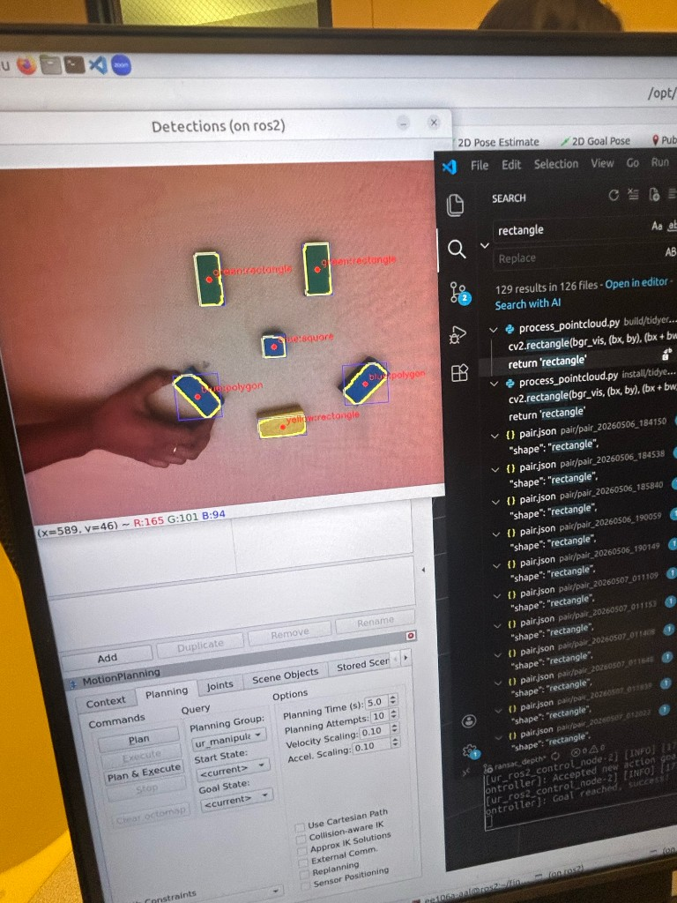
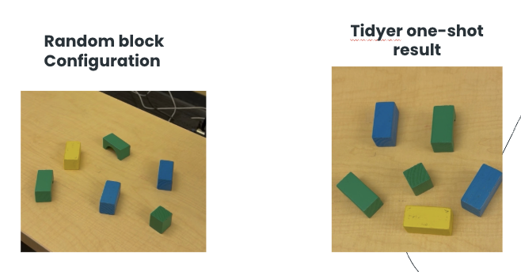
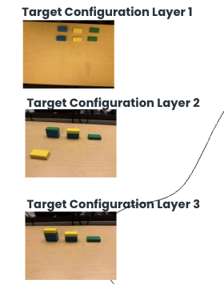
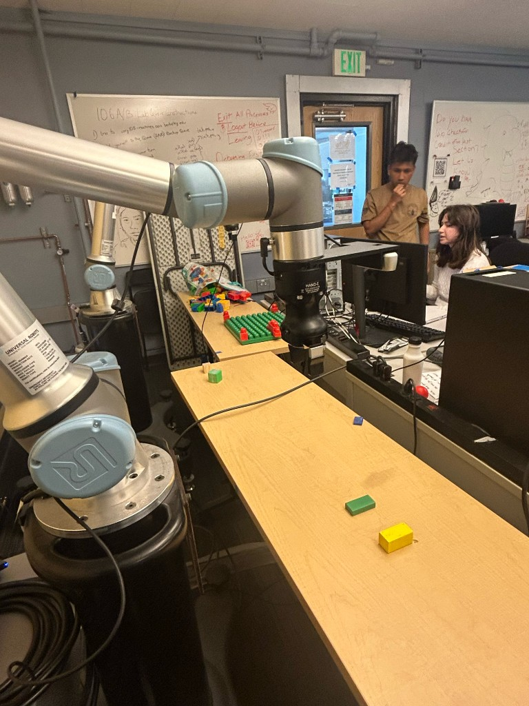

Tidyer: Zero-shot Tabletop Rearrangement
Abstract
You have just finished your last homework problem for EECS 106A and your desk is a mess, and after all that work, you still have to reorganize it. What if you did not have to? We present Tidyer, a zero-shot framework to clean messy tabletops. Grasping remains an active research area; we address tidy-up not with learned policies, but with explicit geometry: object extent, stable depth on the block top, and gripper yaw from structure in the point cloud. The system takes two inputs: a user-provided reference image of the desired workspace and a live RGB-D view of the current scene, refreshed after each manipulation. We identify objects whose poses differ from the target configuration, compute the required translations and rotations, and execute pick-and-place through inverse kinematics and MoveIt-planned joint trajectories. By iterating until the scene matches the reference within tolerances, the robot gradually reshapes the workspace toward the goal layout.

Reference-conditioned tidying: desired layout, live clutter, UR7e actuator, and the aligned outcome.

End-to-end pipeline: RGB-D acquisition, HSV segmentation, MoveIt planning, and UR7e execution.

Live perception output: HSV-driven masks with contour outlines, bounding boxes, centroid markers, and per-block label annotations.

Random initial configuration (left) and the layout after a one-shot tidy run (right).

Reference-driven stacking: target configurations for layer 1 (flat), layer 2 (partial stacks), and layer 3 (taller assemblies).
Demo: Tidy Messy Desk
More Demonstrations
Ex. 1: Rotation and Translation
Ex. 2: 3-way Swap
Ex. 4: Smiley Face (Art)
Ex. 5: Self-correction
Ex. 6: 3D Structures (Chairs)
Ex. 7: 3D Structures (Staircase)
1. Introduction
(a) Goals
A primary goal is to foreground the difficulty of reliable manipulation: what is a practical way to pick up an object and place it where it belongs? Using color and shape cues together with depth-backed 3D estimates, we built a strategy that repeatedly proposes feasible pick and place poses for a parallel-jaw gripper on a UR7e. A second goal is to situate our work relative to modern vision-language systems: early milestones explored whether heavy VLMs were necessary to diff reference versus current scenes; based on course feedback and integration risk, we converged on a traditional perception + MoveIt pipeline that we could tune, log, and reproduce in the lab.
(b) Motivation and justification
Tidying a desk is a relatable instance of reference-conditioned rearrangement: the goal configuration is explicit (the reference photo), success is visually checkable, and errors compound quickly when depth or calibration is wrong. We pursued this project to connect geometric perception, discrete sequencing (which block moves first when goals overlap), and industrial-grade motion planning on hardware shared across the class. Related work on language-conditioned block assembly, such as Blox-Net, which generates feasible assemblies from prompts and closes the loop with simulation and a physical robot, motivated us to think about constraint-aware layouts, even though our system conditions on an image rather than free text (Goldberg et al., arXiv:2409.17126).
(c) From proposal to final system
Our initial write-up emphasized VLM-mediated differencing between frames, dense correspondence,
and search over in-plane rotations at placement. After TA feedback favoring
minimal models and inspectable geometry, the shipped stack centers on
OpenCV HSV segmentation, RealSense intrinsics + depth,
RANSAC plane fitting for block-top height, PCA-based grasp yaw
in base_link, and MoveIt IK + RRTConnect for execution
(tidyer/perception/process_pointcloud.py, tidyer/planning/ik.py,
tidyer/planning/main.py). That pivot traded generality on arbitrary desk clutter for
repeatable demos on colored blocks with a calibrated wrist camera.
(d) Sensing, planning, and actuation
Sensing: An Intel RealSense streams aligned RGB-D; the perception node segments
stable regions above a captured desk plane, lifts 2D detections to 3D in the camera frame, and
transforms points into base_link with tf2_ros.
Planning: Matching reference to current detections (same color label and
classified shape), flagging motion beyond pixel and yaw tolerances, resolving place-footprint
overlap by nudging blocking objects to a computed free pixel on the desk when not in stacking
mode, then publishing a two-pose PoseArray on /pick_place_pair.
Actuation: The pick and place node chains IK solutions with seeded continuity,
sends time-parameterized trajectories to the UR controller, toggles a binary gripper service,
and returns to a known observation configuration before the next capture.
2. Design
(a) Design criteria
- Accept a reference snapshot of the desk and treat it as the ground-truth layout for colored blocks.
- On demand, compare the live scene to that reference and emit at most one executable pick and place per cycle so integration stays debuggable.
- Publish goals in
base_linkso MoveIt and the driver agree on frames. - Support multi-step tidying and simple 3D structures via operator-triggered captures and a stacking mode that skips lateral displacement when vertical placement is intentional.
(b) Architecture
launch/tidyer_bringup.launch.py brings up RealSense (RGB, aligned depth, point
cloud), the process_pointcloud perception executable, tidyer_tf for
the wrist-to-camera static transform, tidyer_pick_place for manipulation, and UR
MoveIt. Because the keyboard listener needs an interactive TTY, it is started manually
(ros2 run tidyer tidyer_keyboard) alongside the launch file, mirroring how other
teams separate operator input from long-running nodes.
(c) Planning and control
Each tidy cycle follows the same staged motion contract: the arm returns to a repeatable observation configuration, perception acquires an aligned depth frame, goals are computed, then the executor runs an approach, grasp, lift, place, retract, and home sequence before the operator (or auto-chain) triggers the next capture.

(d) Key engineering trade-offs
- HSV thresholds are fast to iterate but sensitive to exposure; we expose per-color JSON ranges (
hsv_ranges_json) rather than burying constants in code. - Desk plane median from an empty-desk capture (
/capture_desk_depth) anchors a depth band mask so segmentation does not bleed across the table. - RANSAC vs. raw median depth on the block top rejects side-surface outliers before grasp Z is committed.
- MoveIt at 0.3 velocity scaling favors safe execution over minimum cycle time. That is important when perception noise remains on the order of millimeters to centimeters.
_find_moved_objects pairs each reference detection to the nearest same-label,
same-shape contour in the current image (pixel space), then sorts remaining "moved" pairs by
descending contour area so the largest mismatch is handled first. Temporary
relocations for overlap use a distance-transform free spot biased toward minimal motion from the
blocking object's centroid (_find_free_spot).
(e) Robustness
PCA yaw is suppressed for nearly symmetric eigenvalue ratios so the gripper does not hunt
unstable headings; IK calls are seed-chained across waypoints in pair_callback to
reduce wrist flips. These choices mirror standard practice for tabletop cells: prefer explainable
failure modes over opaque end-to-end policies when course timelines are tight.
3. Implementation
(a) Hardware

Bill of materials (lab stack): one UR7e with parallel gripper, one Intel RealSense D435-class RGB-D camera, assorted standardized colored blocks for repeatable tests, and the department robot desk. Justification for RealSense over a pure RGB webcam matches our proposal: aligned depth is required to lift segmented regions into 3D for grasp and placement without a separate structured-light rig.
(b) ROS graph and packages
Declared runtime dependencies in package.xml include rclpy,
sensor_msgs, geometry_msgs, cv_bridge,
moveit_msgs, tf2_ros, realsense2_camera,
ur_moveit_config, and the launch stack. The perception node additionally uses
std_srvs/Trigger services and publishes geometry_msgs/PoseArray goals
consumed by the executor.
(c) Perception pipeline (process_pointcloud.py)
- Subscribe to RGB, aligned depth, and
CameraInfo; cache intrinsicsfx, fy, cx, cy. - On
/capture_reference, segment the reference frame and store detections plus the RGB snapshot. - On
/capture_current, segment the live frame, match to reference by label and shape, and mark a block "moved" if centroid distance exceedsposition_tolerance_px(default 50 px) or yaw differs beyondyaw_tolerance_rad(≈10°) for non-symmetric shapes. - For each contour, apply morphology, find contours, take bbox-centered pixels as robust 2D anchors, back-project valid depth through the pinhole model, optionally fit a dominant plane with RANSAC for top height, and estimate grasp yaw via 3D PCA transformed into
base_link. - If the reference place footprint intersects another object (2D mask test, dilated by
overlap_margin_px) and stacking mode is off, publish a displacement pick and place for the blocking object to a legal desk pixel; otherwise publish the intended tidy move. - Publish two poses (pick, place) in
base_linkon/pick_place_pair; write debug imagery and JSON metadata under~/final_proj/pair/for post-run inspection.
Swap conflict resolution (free space on the desk). When the reference place
footprint intersects another block in the current image,
_occupiers_at_place_contour rasterizes the reference place contour into a binary
mask, optionally dilates it by overlap_margin_px to absorb placement jitter, and
tests intersection with each other detection's filled contour. The largest occupier is chosen for
a displacement move. _find_free_spot then paints an
occupancy mask from every current detection's contour, dilates it using
free_spot_margin_px, intersects with a desk-only mask derived from
depth near the stored desk plane, and runs a distance transform on the
complement to find pixels where a circle of radius roughly half the displaced block's bounding
diagonal (plus margin) still fits. Among qualifying pixels it picks the one
closest in image space to the occupier's centroid so the block is nudged
minimally onto clear wood before the original pick and place can proceed on a later
/capture_current call.
label:shape annotations
(OpenCV debug windows during integration).(d) Execution pipeline (main.py, ik.py)
The executor subscribes to /pick_place_pair, lifts waypoints for approach and
finger insertion offsets, solves IK through MoveIt's /compute_ik, plans between
joint goals with RRTConnectkConfigDefault via /plan_kinematic_path,
sends trajectories to
/scaled_joint_trajectory_controller/follow_joint_trajectory, and toggles
/toggle_gripper at the appropriate queue points. After a cycle it returns to
DEFAULT_JOINTS and can optionally trigger another /capture_current
when the auto-capture chain is armed, closing the outer tidy loop without a VLM in the middle.
(e) Operator workflow and terminals
Terminal A (interactive):
ros2 run tidyer tidyer_keyboard
Terminal B:
ros2 launch tidyer tidyer_bringup.launch.py
Robot prep (lab scripts, as used in integration):
ros2 run ur7e_utils enable_comms
ros2 run ur7e_utils tuck
ros2 run ur7e_utils reset_state
ros2 run ur7e_utils freedrive # when teaching or recovering
Desk workflow (keyboard):
Clear desk → press d (/capture_desk_depth, median plane)
→ press r (/capture_reference, goal layout)
→ press c (/arm_auto_capture_chain + /capture_current until aligned)
→ press s (/toggle_stacking) when building vertical structures
Optional speed scaling (example):
ros2 service call /io_and_status_controller/set_speed_slider \
ur_msgs/srv/SetSpeedSliderFraction "{speed_slider_fraction: 0.35}"
TF from wrist_3_link to camera_color_optical_frame is broadcast from
static_tf_transform.py; if this transform or the robot driver tree is
misconfigured, /capture_current returns a clear TransformException
message (the same failure mode we saw when base_link and the optical frame were not
connected).
(f) Repository layout (selected)
tidyer/perception/process_pointcloud.py— perception, services, overlap logic, publisher.tidyer/planning/main.py— pick and place executor, job queue, auto-capture chain.tidyer/planning/ik.py— MoveIt IK and joint-space planning helpers.tidyer/planning/static_tf_transform.py— camera extrinsic from wrist.tidyer/planning/keyboard_trigger.py— operator-facing triggers.launch/tidyer_bringup.launch.py— integrated bring-up.
4. Results
(a) Qualitative results
We demonstrated in-plane translation and rotation corrections, multi-block swapping with temporary freespace when goals collide, color-driven organization, deliberate "art" layouts, recovery after disturbances, and multi-layer assemblies when stacking mode is enabled. Each behavior exercises the same core loop (segment, diff against reference, plan one interaction, re-image) rather than a bespoke controller per scenario.
(b) 3D implementation
We do not run a full volumetric planner over explicit 3D voxel maps. Instead,
vertical structure is handled as a sequence of mostly 2D problems: each stage
still compares segmented blobs in the image to a saved reference, publishes one pick and one
place pose per cycle, and relies on depth only where it already mattered for the tabletop case
(intrinsics back-projection, RANSAC block-top height, desk-plane band masking in
_segment_objects via _compute_desk_block_mask).
Stacking vs. swapping. In the default (swap) path, if the reference footprint
for a place overlaps another live block in the image, perception issues a
temporary displacement pick and place so the table clears before the intended
move (_occupiers_at_place_contour, _find_free_spot in
process_pointcloud.py). For 3D stacks, the operator toggles
stacking mode with the s key, which calls
/toggle_stacking: while stacking is on, that overlap check is skipped so the goal
contour is allowed to sit on top of an existing supporter, which is how we reuse the same 2D
correspondence machinery for layered builds.
Depth as a layer discriminator. Parameter
place_occupied_depth_thresh_m (default 0.02 m) is tuned tighter than a full
block height so a block resting one layer higher (closer to the camera along the optical ray)
does not get mistaken for the same layer as the reference top when deciding whether something
still needs to move. Together with block_height_min_m and
block_height_max_m, this keeps segmentation focused on the current physical slab
near the desk plane while still letting the arm place onto raised supports when stacking mode
allows overlaps.
Operator loop for layers. Practically, "layer 3" in the lab is
another reference snapshot taken after lower layers match the previous
reference: capture a flat reference, run c until aligned, place a new physical
arrangement or add height, capture a new reference for the next tier, repeat. The executor in
main.py does not change; each cycle is still one PoseArray pair in
base_link.
(c) Additional challenges (team notes)
[Teammates: add integration stories, failed trials, mitigations, or open issues here.]
(d) Video highlights
Short clips from integration testing.
Ex. 1: Rotation and translation
Ex. 2: 3-way swap
Ex. 3: Tidy messy desk (color organization)
Ex. 4: Smiley face (art)
Ex. 5: Self-correction
Ex. 6: 3D structures (chairs)
Ex. 7: 3D structures (staircase)
5. Conclusion
(a) Outcomes vs. criteria
The delivered system meets the core criteria in §2a: reference capture, live differencing, overlap-aware sequencing, MoveIt-backed execution, and optional stacking. What remains open is hard robustness: lighting swings, highly reflective blocks, and aggressive speed settings still show up as protective stops or IK aborts, which is consistent with the difficulty called out in our proposal.
(b) Challenges encountered
- TF connectivity: when
base_linkandcamera_color_optical_framewere not in one tree, perception failed fast with explicit errors: exactly the log line we saw during integration (tf2_rosconnectivity between wrist mount and robot description must always be verified before demos). - MoveIt / RViz warnings about camera frames under
worldhighlighted how easy it is for optional monitors to disagree with the frames perception actually uses; we standardized on the optical color frame aligned with depth. - HSV sensitivity required iterative tuning; JSON parameters let us swap color bounds without rebuilding.
- Depth and centroid noise motivated RANSAC top fitting, desk band masking, and Z offsets (
pick_z_offset_m,place_z_offset_m) to keep the wrist clear of collisions at pick and place. - Operator rhythm: returning to a repeatable observation pose between captures mattered as much as algorithmic correctness for pixel-stable differencing.
(c) Future work
Natural extensions include stronger segmentation (e.g., SAM-class models) with careful latency budgeting, richer collision reasoning than single-step overlap masks, learned or search-based grasp orientation for heterogeneous objects, and optional language interfaces layered above the existing reference image contract. Those directions preserve the modular boundary where our team spent most of the debugging budget: the line between "what moved?" and "how should the arm move?".
6. Team

Tvisha Londhe
Tvisha is pursuing her undergraduate degree in EECS and is interested in machine learning and learning-based architectures, particularly in how they can be applied to problems in computer vision and robotics.
Kenneth Llontop
Kenneth is pursuing his undergraduate degree in EECS and is interested in leveraging machine learning and robotics to improve social welfare.

Shivanshi Tandon
Shivanshi is pursuing her undergraduate degree in EECS and Business and is interested in intersecting software with her first-time experience in robotics to broaden solution capabilities.

Sarika Pasumarthy
Sarika is pursuing undergraduate degrees in Computer Science and Business Administration and is interested in AI/ML for social good and in solving interesting problems through combined hardware and software systems.
7. Additional Materials
- GitHub repository: source,
package.xml,setup.pyentry points, and launch files. - Branch note: integrated demos and this site track the
demobranch; alignmainif your course submission requires a single default branch. - CAD for custom mounts, vendor URDF versions, and component datasheets: add links as you publish them.
References
A. Goldberg, K. Kondap, T. Qiu, Z. Ma, L. Fu, J. Kerr, H. Huang, K. Chen, K. Fang, and K. Goldberg, "Blox-Net: Generative Design-for-Robot-Assembly Using VLM Supervision, Physics Simulation, and a Robot with Reset," arXiv:2409.17126, 2024. https://arxiv.org/abs/2409.17126